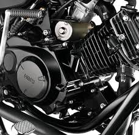
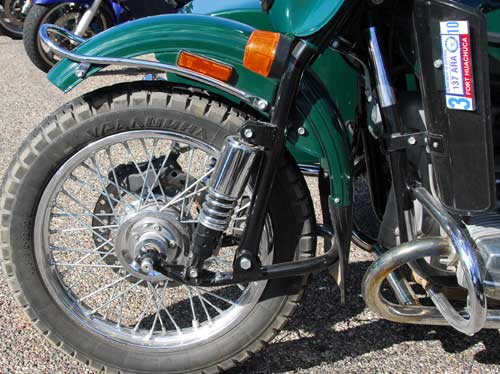
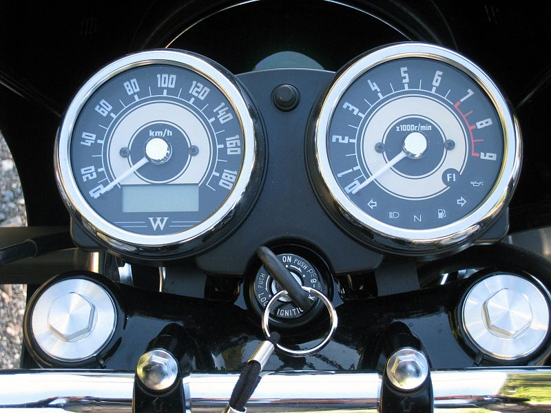

A motorcycle, often called a motorbike, bike, or cycle, is a two- or three-wheeled motor vehicle.[1] Motorcycle design varies greatly to suit a range of different purposes: long distance travel, commuting, cruising, sport including racing, and off-road riding. Motorcycling is riding a motorcycle and related social activity such as joining a motorcycle club and attending motorcycle rallies. The 1885 Daimler Reitwagen made by Gottlieb Daimler and Wilhelm Maybach in Germany was the first internal combustion, petroleum fueled motorcycle. In 1894, Hildebrand & Wolfmüller became the first series production motorcycle. In 2014, the three top motorcycle producers globally by volume were Honda (28%), Yamaha (17%) (both from Japan), and Hero MotoCorp (India).[2] In developing countries, motorcycles are considered utilitarian due to lower prices and greater fuel economy. Of all the motorcycles in the world, 58% are in the Asia-Pacific and Southern and Eastern Asia regions, excluding car-centric Japan.
Motorcycle engines work the same way that car engines do. They consist of pistons, a cylinder block and a head, which contains the valve train. The pistons move up and down in the cylinder block, driven by explosions of a fuel-air mixture that has been ignited by a spark. Valves open and close to allow the fuel-air mixture to enter the combustion chamber. As the pistons move up and down, they turn a crankshaft, which transforms the energy from the pistons into rotary motion. The rotational force of the crankshaft is transmitted, via the transmission, to the rear wheel of the motorcycle. Motorcycle engines are generally classified by one of three characteristics: the number of cylinders they possess, the capacity of their combustion chambers or the number of strokes in their power cycles.
The wheel rims are usually steel or aluminum (generally with steel spokes and an aluminum hub) or mag-type cast or machined aluminum. Cast magnesium disks, produced by one-step hot forging from magnesium alloys ZK60 and MA-14, are also used for many motorcycle wheels. At one time, motorcycles used wire wheels built up from separate components, but, except for dirtbikes, one-piece wheels are more common now. Performance racing motorcycles often use carbon-fibre wheels, but the expense of these wheels is prohibitively high for general usage
 Most road motorcycles have an instrument panel, usually consisting of speedometer, odometer and tachometer. Fuel gauges are becoming more common, but traditionally a reserve tank arrangement is used with a petcock (petrol tap) on the side of the motorcycle allowing the rider to switch to a reserve fuel supply when the main fuel supply is exhausted. There is not actually a separate reserve tank: The intake for the petcock has two pipes, one extending higher into the fuel tank than the other. When fuel no longer covers the longer pipe the engine will lose power/splutter and the rider switches the petcock to the "reserve" setting, which accesses the shorter pipe. Riders whose bikes lack a fuel gauge (most machines prior to the past few years) usually learn how far they can go with a full tank of fuel, and then use a trip meter if available to judge when they must refill the tank.